R.01
Intraoperative neurophysiology
Single-neuron, local field potential and electrocorticography recordings from patients during awake DBS surgery.
The Translational Neurophysiology & Brain Stimulation lab studies human brain function and dysfunction, and develops new brain stimulation methods to improve the lives of people with neurological disease.
About the lab
Deep brain stimulation (DBS) is a standard of care for people with Parkinson’s disease, essential tremor and dystonia, and is drawing attention for many other refractory neurological disorders.
Our team records the activity of individual neurons deep within the brain during awake neurosurgery. These recordings are part of routine clinical care, generating a “map” of the brain that ensures each intervention reaches the correct location.
Patients undergoing deep brain stimulation surgery remain awake during the procedure.
Microelectrodes record individual neurons from deep within the brain as part of standard clinical care.
The recordings confirm each intervention reaches the right location, and open a unique window for research.
Research
Our projects span the complete translational continuum. We apply biomedical signal processing, machine learning and computational modelling to understand how the brain behaves and how it responds to stimulation.
Single-neuron, local field potential and electrocorticography recordings from patients during awake DBS surgery.
How deep brain stimulation acts on neural circuits, and how those effects can be refined into better therapies.
Understanding and harnessing plasticity in basal ganglia circuits for sustained improvement in Parkinson’s disease.
Electroencephalography and magnetoencephalography with patients outside the operating room environment.
Signal processing, machine learning and computational modelling to decode neural activity and its responses to stimuli.
Optical, electrophysiological and behavioural techniques, including optogenetics and high-density electrophysiology.
Recording across scales
Approximate spatial scale
Facilities
The TNBS lab operates in state-of-the-art wet and dry lab spaces at the Krembil Brain Institute, Toronto Western Hospital.
A permanent research fixture within a state-of-the-art operating theatre, where intracranial data are collected during DBS implantation surgeries.
Prof. Milosevic holds appointments at the Krembil Brain Institute, the KITE Research Institute, and the University of Toronto’s Institutes of Biomedical Engineering and Medical Sciences. We collaborate with a multidisciplinary team:
People
Principal investigator
Luka received his PhD in Biomedical Engineering from the University of Toronto, followed by a Postdoctoral Fellowship at the University of Tübingen’s Institute for Neuromodulation and Neurotechnology. His research sits at the intersection of biomedical engineering and neuroscience, focused on novel data-driven methods of neuromodulation and brain stimulation.
He and his team also play a clinical role, monitoring patients’ brain activity to guide the placement of DBS devices at Toronto Western Hospital.
Back: David Crompton, Luka Zivkovic, Dr. Luka Milosevic, Prerana Keerthi, Alisha Baldwin. Front: Antonio Franco, Srdjan Sumarac, Tristan Lawson, Shan Sohail. Not pictured: Dallas Leavitt, Filip Miščević, Aidan Austin-Day, Shysta Sehgal. (September 2025)
Lab members
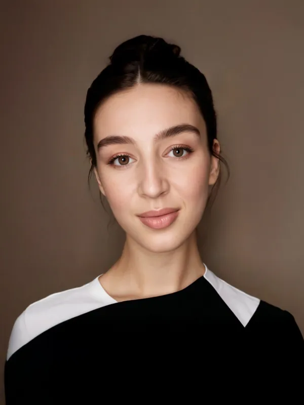
Postdoctoral Fellow
Applies temporal coding theory to design biomimetic deep brain stimulation patterns that restore healthy firing.
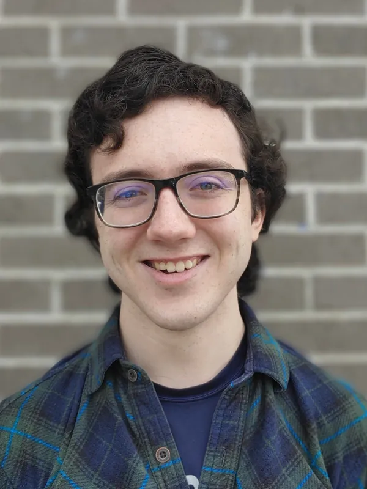
Postdoctoral Fellow
Uses computational modelling to work out how deep brain stimulation acts on the brain.
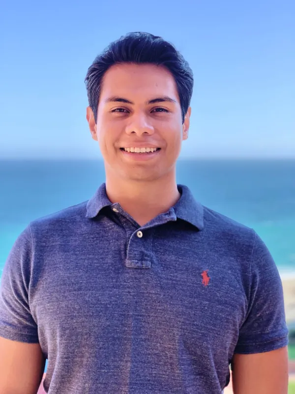
PhD Candidate
CONAHCYT Doctoral Awardee
Develops closed-loop neuromodulation for Parkinson’s disease driven by brain and wearable-sensor signals.
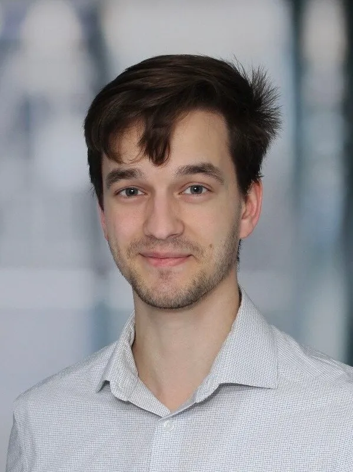
PhD Candidate
DAAD Graduate Scholarship
Studies reward processing and targeted DBS paradigms for the cognitive symptoms of Parkinson’s disease.
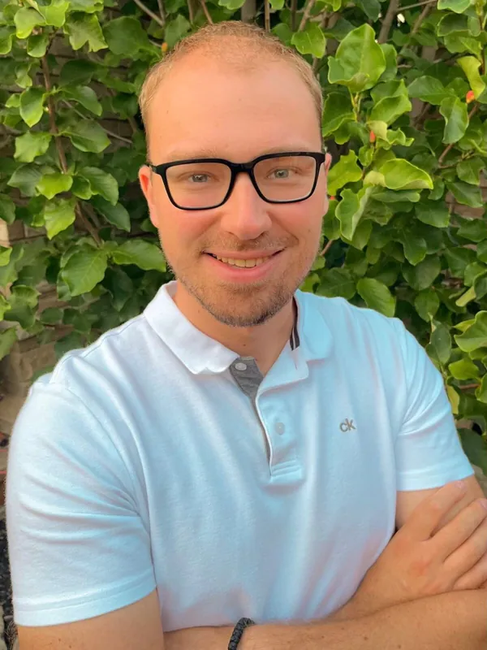
PhD Candidate
Mitacs Accelerate Grant
Maps cortico-subcortical networks in humans to improve DBS targeting in Parkinson’s disease and for self-injurious behaviour in severe autism.
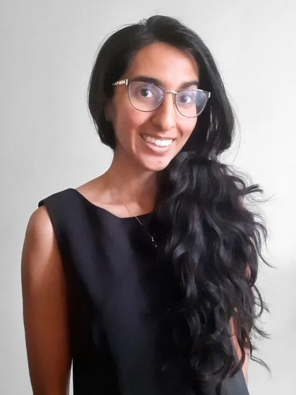
PhD Candidate
Branch Out Graduate Grant
Combines intraoperative recordings and computational models to test closed-loop strategies that target pathological oscillations.
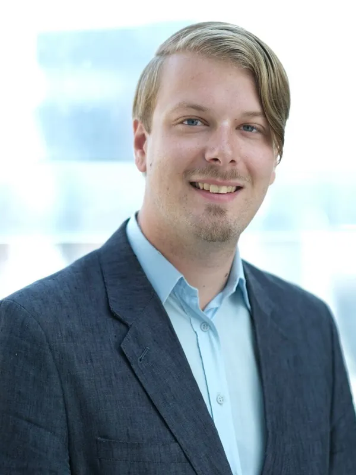
PhD Candidate
Builds brain–computer interface devices for speech and audio perception.
PhD Candidate
Parkinson Canada Graduate Student Award
Combines optical and electrophysiological tools to uncover pathological and therapeutic neural circuits across disease models.
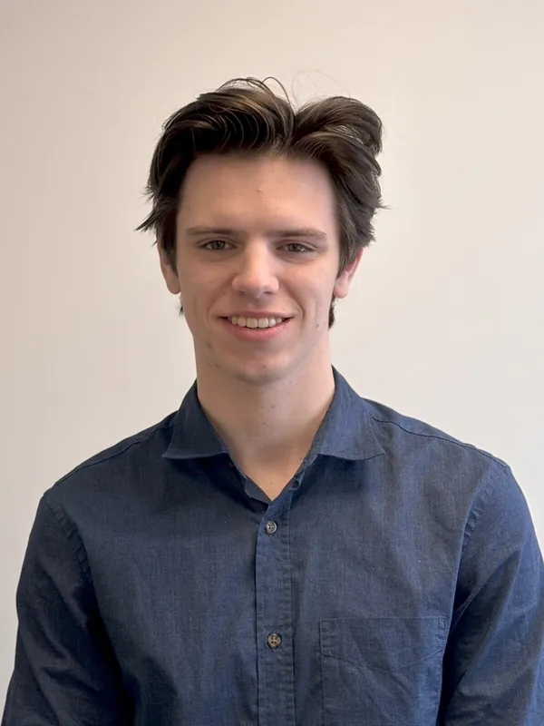
PhD Candidate
Ontario Graduate Scholarship
Develops new DBS targets for spinocerebellar ataxia using animal models, looking for stimulation-based motor improvements.
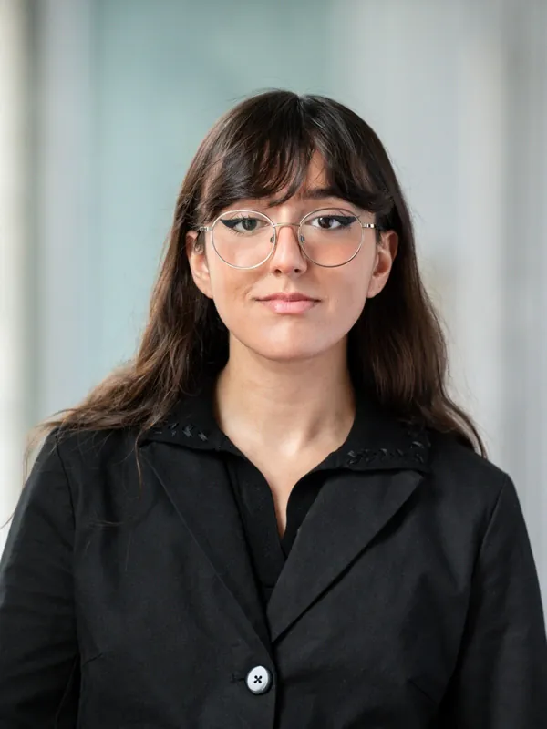
PhD Candidate
Percy Edward Hart Award
Investigates how deep brain stimulation works at the level of neural activity in people with Parkinson’s disease.
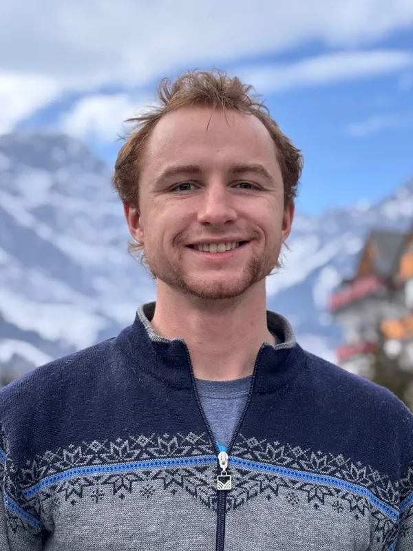
PhD Candidate
Ontario Graduate Scholarship
Investigates how deep brain stimulation relieves depression, using electrophysiology and optogenetics.
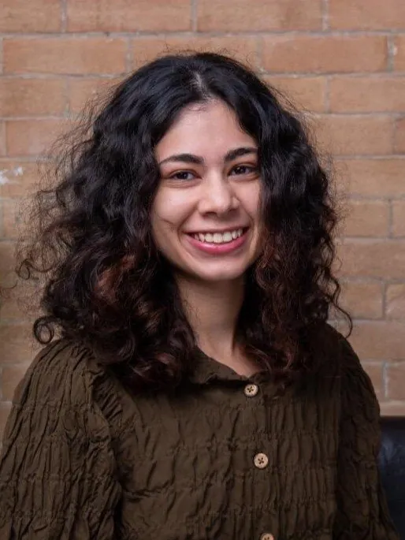
PhD Student
Percy Edward Hart Award
Uses evoked potentials and diffusion tensor imaging to map the fibre tracts DBS engages in psychiatric disorders.
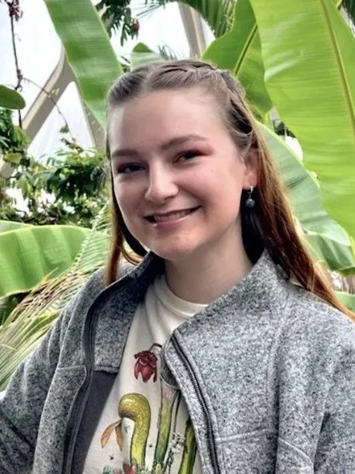
PhD Student
Percy Edward Hart Award
Studies MEG and fMRI networks to understand deep brain stimulation for depression.
MASc Student
Records single neurons to study how the subthalamic nucleus encodes grip in Parkinson’s disease.
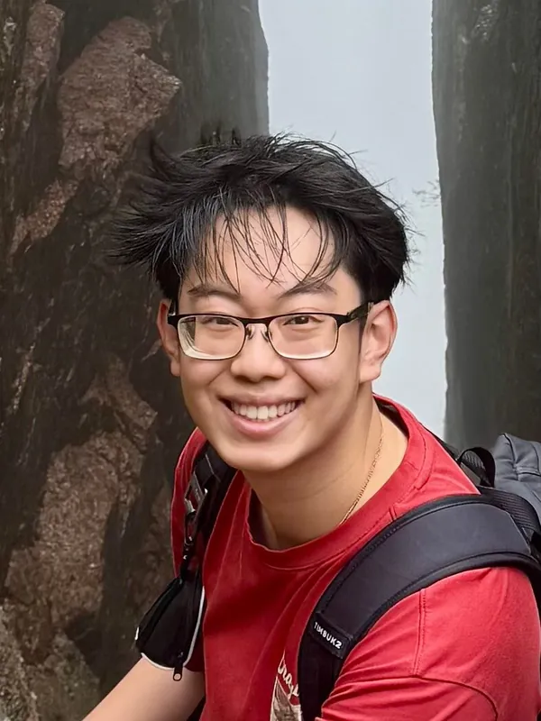
MASc Student
Works on adaptive, closed-loop deep brain stimulation.
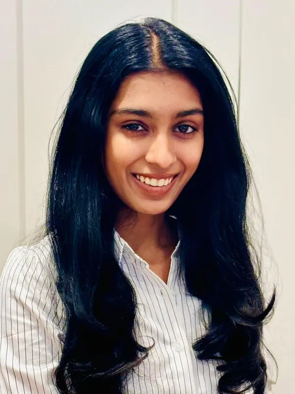
Undergraduate Research Assistant
Collects and analyses clinical data to improve DBS targeting.
Undergraduate Research Assistant
IMS UROP Award
Studies how synapses and circuits respond to high-frequency deep brain stimulation.
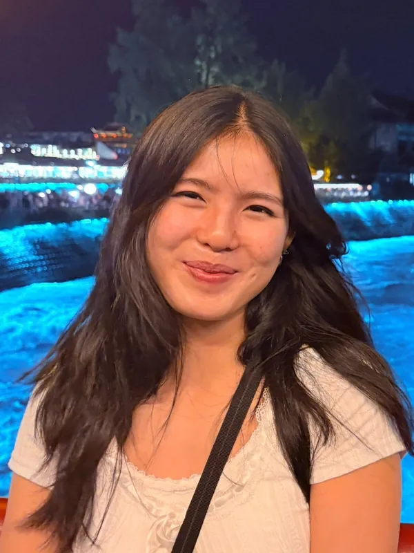
Undergraduate Research Assistant
Interested in neurorehabilitation.
Postdoctoral alumniMaximilian Scherer, PhD 2022–2024Leon Amadeus Steiner, MD/PhD 2020–2022
Lab life · 2022–2026
2026Team social at a Toronto Maple Leafs Baseball game
2026"Outdoor Research" after work during the FIFA World Cup
2026ToBE Conference by the UofT Institute of Biomedical Engineering
2026Arrival in Würzburg, Germany for the DBS Expert Summit
2025Pedaling for Parkinson's Canada, Toronto
2025Equipment testing session
2025Brain Stimulation Conference in Kobe, Japan
2025Hike to Minoh Falls in Osaka, Japan
2024Holiday dinner with the Kalia Labs team
2024CRANIA Conference, Toronto
2024CRANIA Conference, Toronto
2024Hike in the Humber Valley
2023BME holiday cocktail party
2023Experiments during DBS implantation surgery
2023CRANIA Conference, Toronto
2023CRANIA Conference, Toronto
2023Canadian Neuromodulation Society Meeting, Niagara on the Lake
2023Pedaling for Parkinson's Canada, Niagara Falls
2022Human Single Neuron Meeting, Los Angeles
2022DBS World Expert Summit, Würzburg, Germany
Selected publications
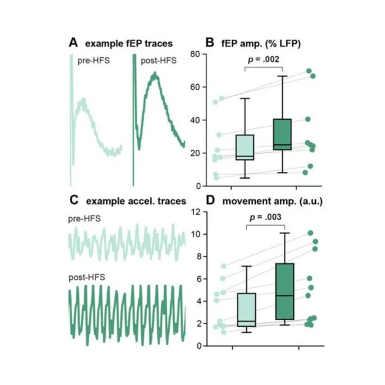
2025Brain Modulating inhibitory synaptic plasticity to restore basal ganglia dynamics in Parkinson’s diseaseSpencer KA, Boogers A, Sumarac S, et al., Milosevic L 02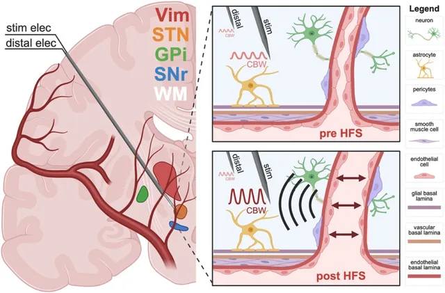
2025Brain Stimulation The effects of intracranial stimulation on local neurovascular responses in humansVetkas A, Sumarac S, Chau S, et al., Milosevic L 03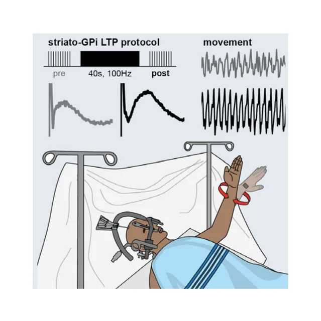
2025Neural Regeneration Research Harnessing synaptic plasticity for sustained motor improvement in Parkinson’s diseaseSumarac S, Pouratian N, Gittis AH, Milosevic L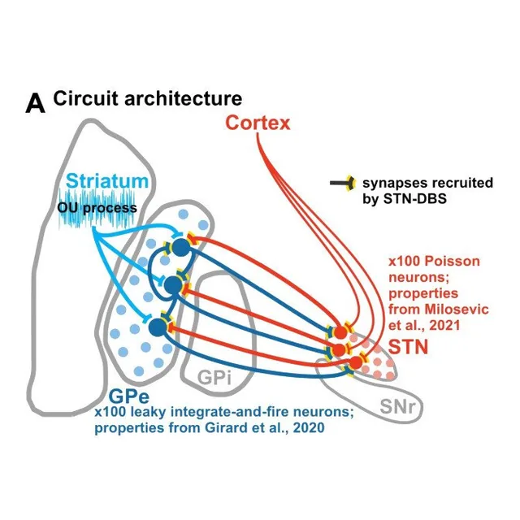
2024Nature Communications Neural signatures of indirect pathway activity in Parkinson’s diseaseSteiner LA, Crompton D, Sumarac S, et al., Milosevic L 05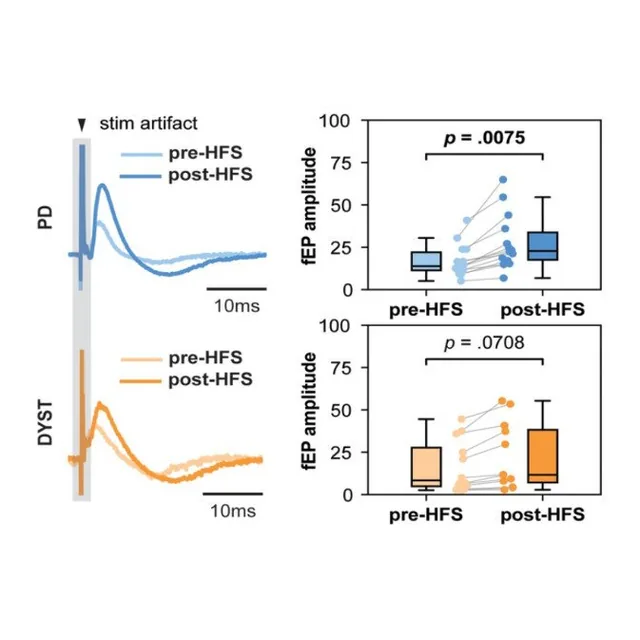
2024eLife Interrogating basal ganglia circuit function in Parkinson’s disease and dystoniaSumarac S, Spencer KA, Steiner LA, et al., Milosevic L 06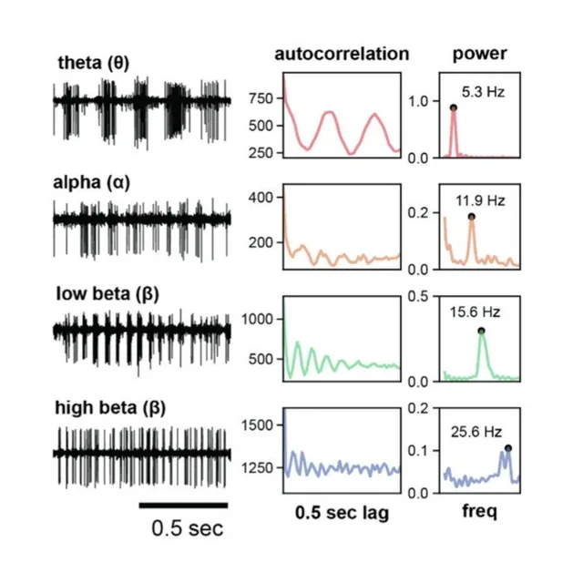
2024npj Parkinson’s Disease Clinico-physiological correlates of Parkinson’s disease from multi-resolution basal ganglia recordingsSumarac S, Youn J, Fearon C, et al., Milosevic L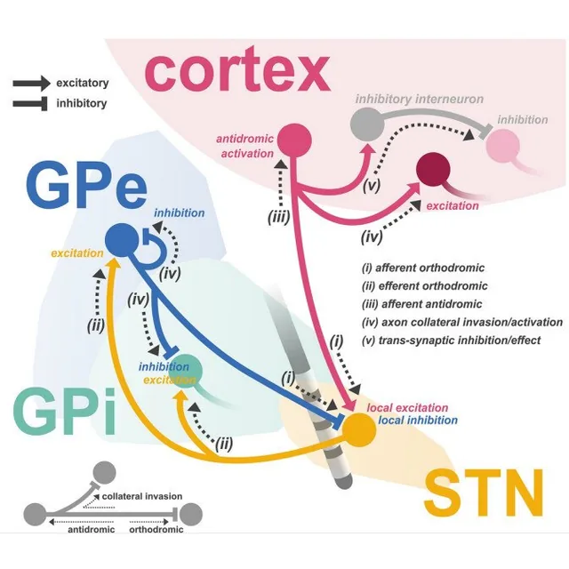
2023Brain Neurophysiological mechanisms of deep brain stimulation across spatiotemporal resolutionsNeumann WJ, Steiner LA, Milosevic L 08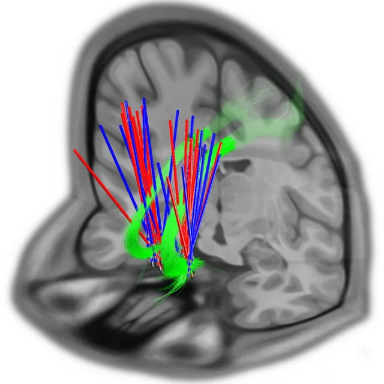
2023Brain Stimulation Oscillatory network markers of subcallosal cingulate deep brain stimulation for depressionScherer M, Harmsen IE, Samuel N, et al., Milosevic L 09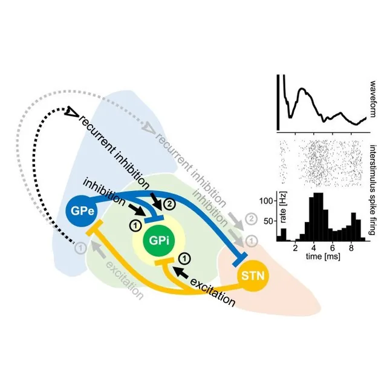
2023Brain Communications A convergent subcortical signature to explain the common efficacy of subthalamic and pallidal deep brain stimulationSteiner LA, Milosevic L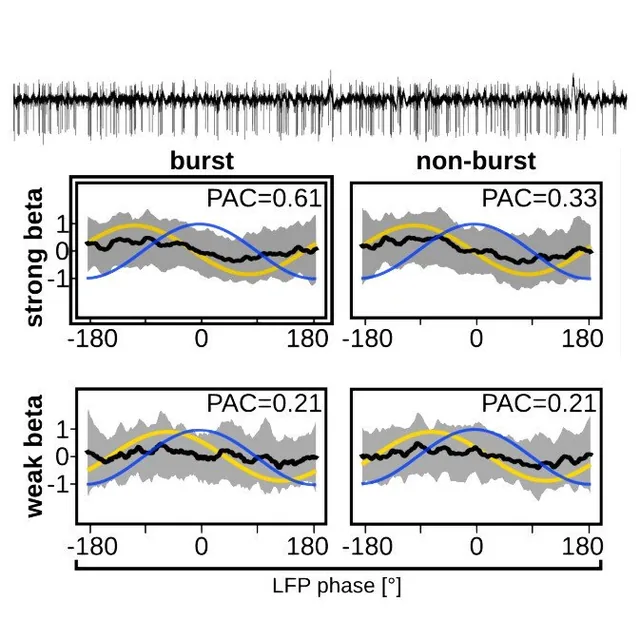
2022PNAS Single-neuron bursts encode pathological oscillations in Parkinson’s disease and essential tremorScherer M, Steiner LA, Kalia SK, et al., Milosevic L 11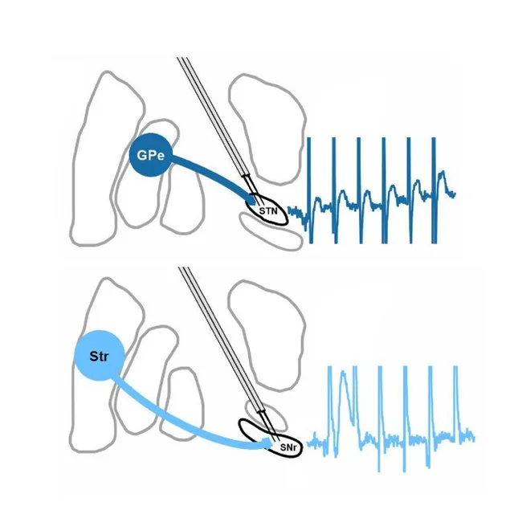
2022Brain Stimulation Persistent synaptic inhibition of the subthalamic nucleus by high frequency stimulationSteiner LA, Kühn AA, Geiger JRP, et al., Milosevic LLocation
The TNBS Lab is part of the Krembil Brain Institute, based at Toronto Western Hospital in downtown Toronto.
399 Bathurst St
43.653° N · 79.405° W
Join the lab
Prospective students and researchers with experience or interest in any of these areas are welcome to contact Dr. Milosevic at any time.